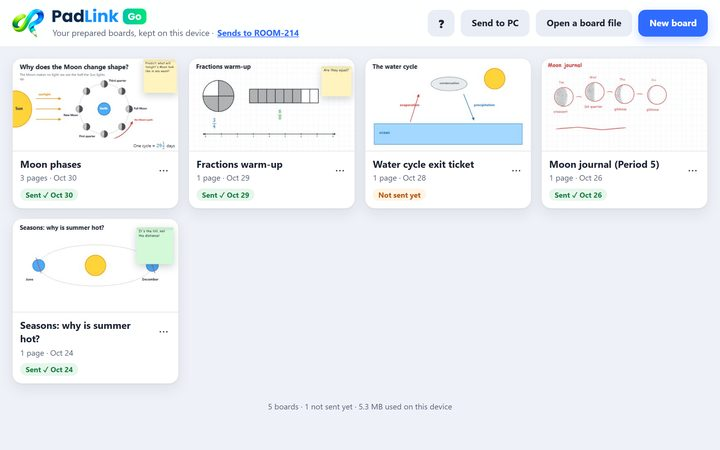
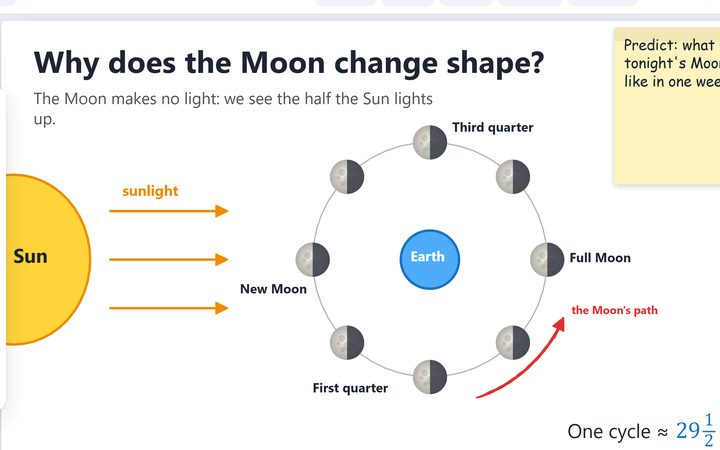
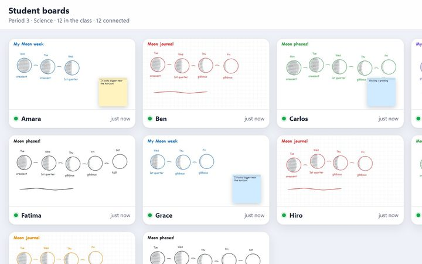
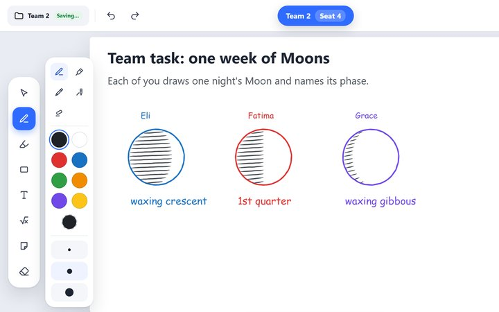
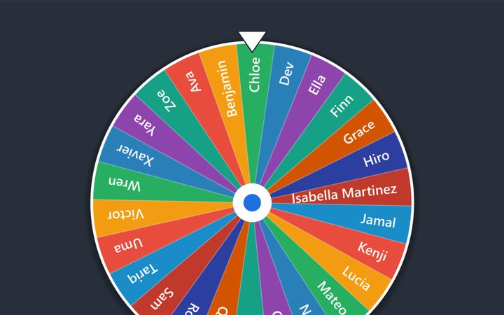
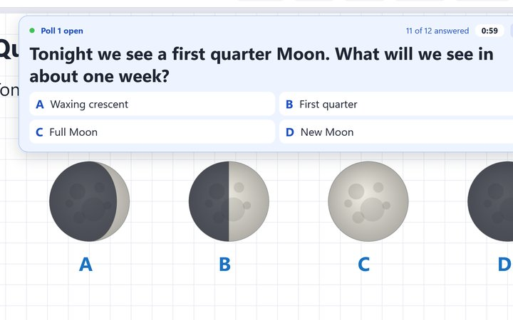
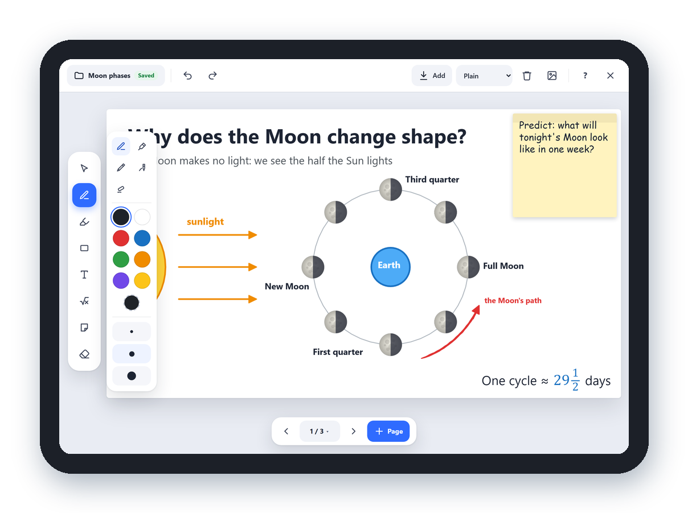

Made by a teacher. Your iPad or iPhone runs the whiteboard, and students join from any device with a web browser.

Build boards ahead of time with pictures, PDFs and Google Docs.

Teach from anywhere in the room with your iPad or iPhone.

See every student's work live, and help anyone one on one.

Home teams or mixed on the fly. One shared board per team.

A countdown on every screen, and a wheel to pick names.

Multiple choice, True/False and Yes/No polls (a student's idea!), and now draw your answer too.
No installer, no admin rights.
Click Allow on the PC. After that, it reconnects by itself.
On a Chromebook or any device. They tap their name, and you let them in.
PadLink Go is the whiteboard in your pocket. Build tomorrow's boards on the couch or the bus, even with no internet, then send them to your classroom PC.
Point your iPad's or iPhone's camera here, then tap the link that appears. PadLink Go opens in Safari.
padlink-app.github.ioFree, with nothing to install from the App Store. Tap Open PadLink Go, then in Safari tap Share → Add to Home Screen to keep it there. It sends boards to PadLink on your classroom PC.
Free, with nothing to install from the App Store. PadLink Go is for your iPad or iPhone: once it's open there, tap Share → Add to Home Screen to keep it. It sends boards to PadLink on your classroom PC.

Yes. No subscription, no ads, no paid version. If it helps your class, you're welcome to buy me a coffee, but you never have to.
A Windows 10 or 11 PC (usually the one on your projector) and an iPad or iPhone. An Apple Pencil is great but optional. Students need a Chromebook, laptop or tablet with a web browser: nothing to install. PadLink itself needs Windows; it doesn't run on a Mac or Chromebook.
No. They join with a code and tap their name. Their work stays on your PC and is deleted when you close the class.
Opened in a Safari tab, PadLink Go needs the internet, and Safari may clear its boards if you don't open it for about a week. Opened from its Home Screen icon, it works with no internet and keeps your boards. In Safari, tap Share → Add to Home Screen, then always open it from there. (Boards made in a Safari tab stay separate from the Home Screen app's.) Getting PadLink Go
Yes. If your school's network keeps the iPad or students' devices apart from the PC, turn on Remote mode in PadLink. It connects the way ordinary websites do. How to use Remote mode
PadLink isn't signed with a paid certificate yet, so Windows may warn the first time. Click More info, then Run anyway.
My favorite classroom tools were spread across too many apps, so I built one place for them. It keeps growing with ideas from my own classroom.